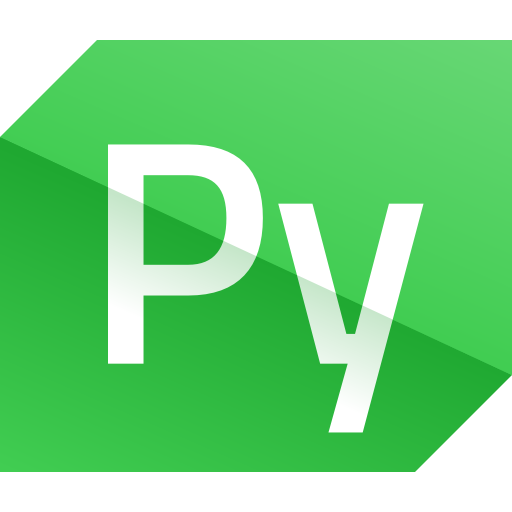
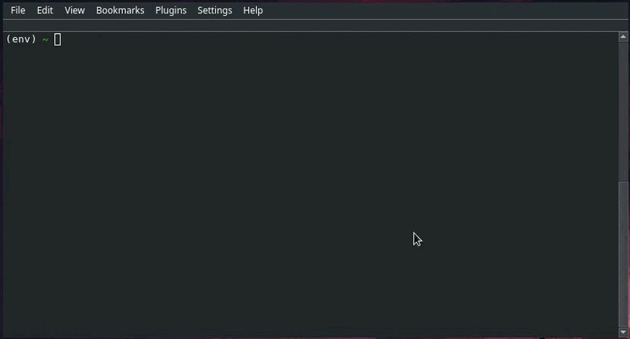
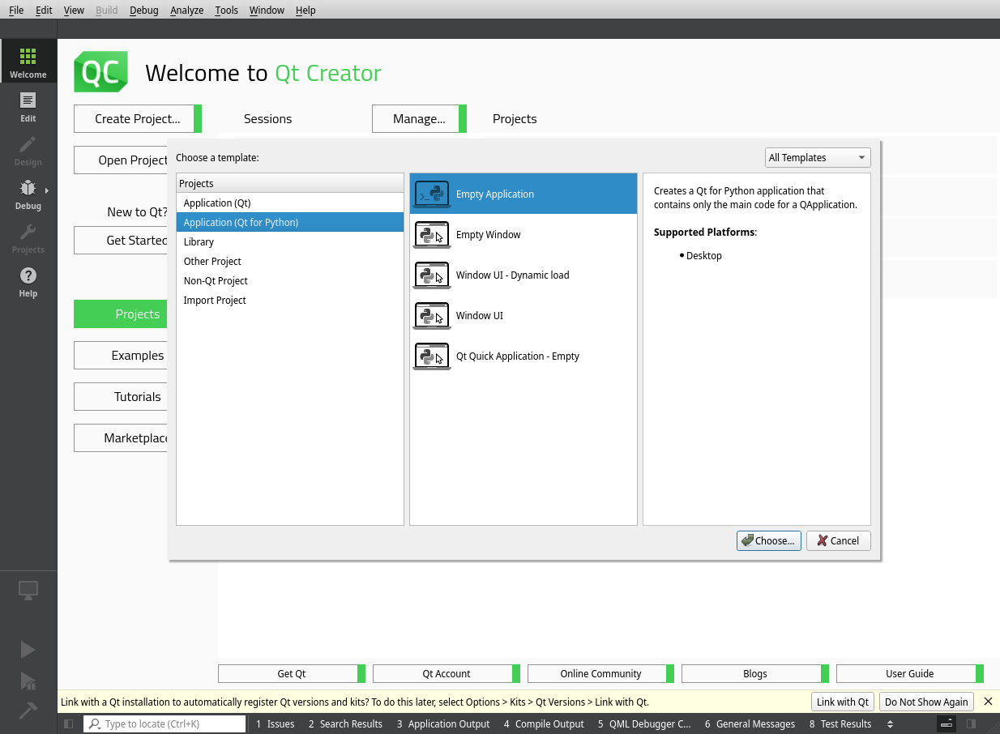
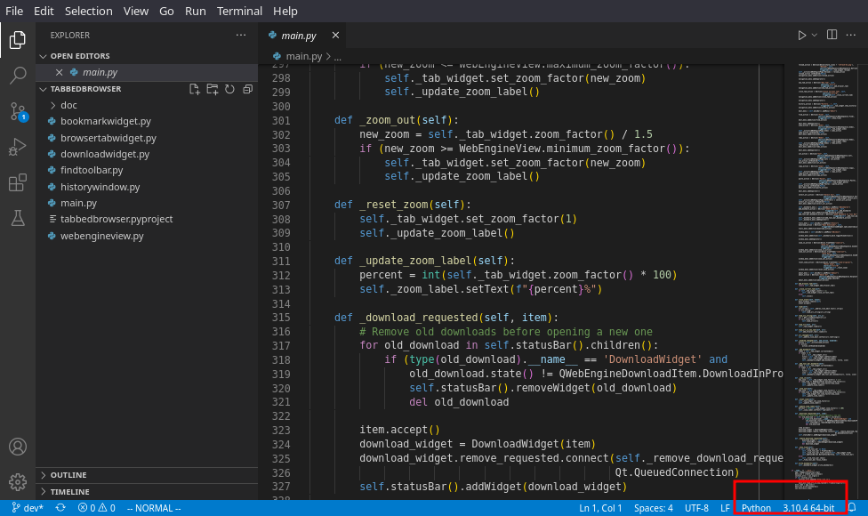
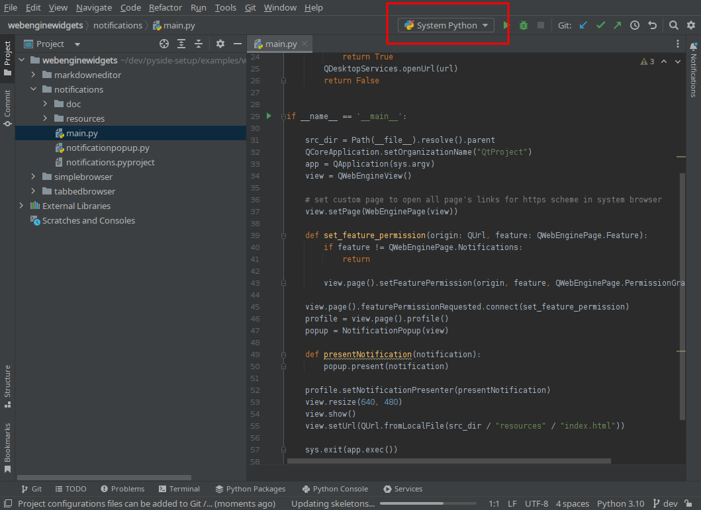
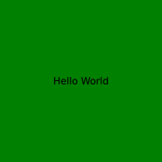
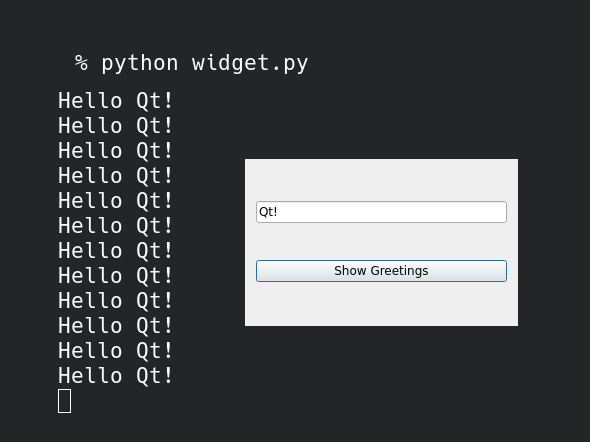
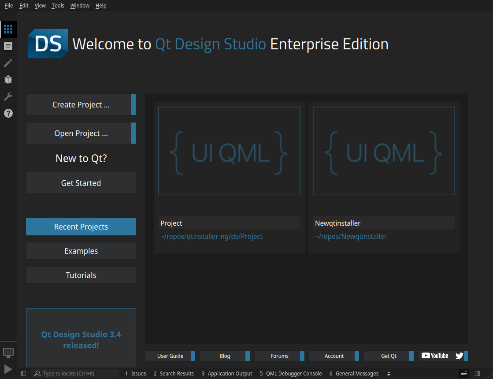
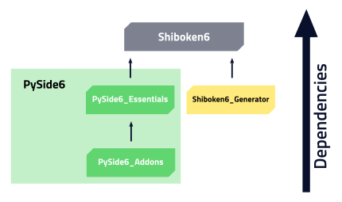
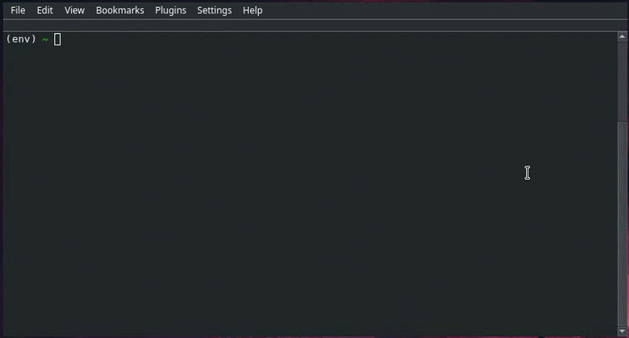

How your Python projects can benefit from Qt?
Dr. Cristián Maureira-Fredes
@cmaureir



⚠️ Before we start!
Previous webinars and videos 📺
doc.qt.io/qtforpython/videos.html
have a topic idea? let us know!
How Qt plays in the Python world
Getting started with PySide
Pre-requisites
- ✅ a newer Python version 3.7+
- ✅ an isolated virtual environment (recommended)
- ❌ Qt installation
Installation (OSS)
Installation (Commercial)

# Remember to activate the environment!
pip install *.whl
Installation (Other options) ⬇️
- Not officially supported
- macOS: brew
- Linux: apt, dnf, pacman, etc...
- conda, and other python package managers.
Everything is installed...
so what now? 🤔
⚠️
Make sure the Python environment with PySide installed is being used
Qt Creator (1/2)
Qt Creator (2/2)
Other IDEs (1/2)
Other IDEs (2/2)
What you get with IDE support? 🙋
- Auto completition
- Type informations (
.pyifiles) - LSP - linters (
flake8) - formatters (
black, yapf, ...) - Debugging 🐛
- and more! 🎉
Which Qt technology should you use? 🧐
Qt Quick (1/2)
- Declarative approach
- Popular with mobile applications
- Components that provide a more dynamic app infrastructure
- Augment applications with
JavaScript
Qt Quick (2/2)
import QtQuick
Rectangle {
id: main
width: 200
height: 200
color: "green"
Text {
text: "Hello World"
anchors.centerIn: main
}
}
import sys
from PySide6.QtWidgets import (
QApplication
)
from PySide6.QtQuick import (
QQuickView
)
if __name__ == "__main__":
app = QApplication()
view = QQuickView()
view.setSource("view.qml")
view.show()
sys.exit(app.exec())

Qt Widgets (1/2)
- Initial Qt UI approach 💯
- Stable, and widely used
- Focused on desktop applications
- Native look and feel 😌
Qt Widgets (2/2)
import sys
from PySide6.QtCore import Slot
from PySide6.QtWidgets import (QLineEdit, QPushButton,
QApplication, QVBoxLayout, QDialog)
class Form(QDialog):
def __init__(self, parent=None):
super(Form, self).__init__(parent)
self.edit = QLineEdit("Write my name here")
self.button = QPushButton("Show Greetings")
layout = QVBoxLayout()
layout.addWidget(self.edit)
layout.addWidget(self.button)
self.setLayout(layout)
self.button.clicked.connect(self.greetings)
@Slot()
def greetings(self):
print(f"Hello {self.edit.text()}")
if __name__ == '__main__':
app = QApplication(sys.argv)
form = Form()
form.show()
sys.exit(app.exec())

That code looks weird
Setters/Getters?, camelCase?"Pythonizing" Qt 🐍
# Common Qt structure
# - Using setter/getter
# - No writable properties
table = QTableWidget()
table.setColumnCount(2)
button = QPushButton("Add")
button.setEnabled(False)
layout = QVBoxLayout()
layout.addWidget(table)
layout.addWidget(button)
layout.setSpacing(2)
from __feature__ import (
snake_case
)
table = QTableWidget()
table.set_column_count(2)
button = QPushButton("Add")
button.set_enabled(False)
layout = QVBoxLayout()
layout.add_widget(table)
layout.add_widget(button)
layout.set_spacing(2)
from __feature__ import (
snake_case, true_property
)
table = QTableWidget()
table.column_count = 2
button = QPushButton("Add")
button.enabled = False
layout = QVBoxLayout()
layout.add_widget(table)
layout.add_widget(button)
layout.spacing = 2
Improving processes
Tooling 🧰Widgets designer
pyside6-designer
Project automation
pyside6-project
QtDS
Packaging /freezing/ your application 🥶
| Name | License | Qt 6 | Qt 5 | Linux | macOS | Windows |
|---|---|---|---|---|---|---|
| PyInstaller | GPL | ✅ | ✅ | ✅ | ✅ | ✅ |
| cx_Freeze | MIT | ✅ | ✅ | ✅ | ✅ | ✅ |
| py2exe | MIT | partial | partial | ❌ | ❌ | ✅ |
| py2app | MIT | ✅ | ✅ | ❌ | ✅ | ❌ |
| briefcase | BSD3 | ✅ | ✅ | ✅ | ✅ | ✅ |
| Nuitka | MIT | ✅ | ✅ | ✅ | ✅ | ✅ |
Bridge to other Python modules (1/2)
Bridge to other Python modules (2/2)
C++ Interaction 🥷
Extending C++ applications with Python 💫
QtScrypt
- Inspired by QtScript, not a port
- A dynamic way to interact with Python from C++
- Enabling Python modules within C++ 🐍
- proof of concept
// Simple Engine
QScryptEngine e;
e.execute(...);
QVariant r = e.evaluate(...);
// Load Python module
QScryptModule mod(...);
// Get Function Reference
QScryptFunction f(..., &mod;);
// Call Function
QVariantList args;
QVariant r = f.call(args);
The latest and greatest from 6.3
Improvements, features and more!
New package structure (1/4)
New package structure (2/4)
New package structure (4/4)
- Commercial M2M modules are now an complementary wheel
- Requires
pyside6(essentials + addons)
Better QML support
- Also with
pyside6-project @QmlElementand beyond!- QmlAnonymous, QmlAttached, QmlExtended, QmlForeign, QmlNamedElement, and QmlUncreatable
libpysideqml(from libpyside)
Python compatibility 🐍
Qt 5.15 (PySide2)
- compatible with 3.5+
Qt 6.3 (PySide6)
- compatible 3.6+
- but! from 6.4 will be 3.7+
Not only vanilla Python 🍨
- Python implementation (in Python)
- Has a JIT
- On average 4.2 faster than CPython
The mandelbrot example
bugreports.qt.io/browse/PYSIDE-535
# Python
1/8, max ite: 96, time: 4.111s
2/8, max ite: 288, time: 7.179s
3/8, max ite: 1056, time: 22.156s
4/8, max ite: 4128, time: 82.706s
5/8, max ite: 16416, time: 371.348s
# PyPy
1/8, max ite: 96, time: 4.732s
2/8, max ite: 288, time: 4.99s
3/8, max ite: 1056, time: 6.872s
4/8, max ite: 4128, time: 12.451s
5/8, max ite: 16416, time: 33.341s
Cross compilation (1/3)
- Focused on Raspberry Pi 🥧
- Needs Host Linux and Target Linux
Cross compilation (2/3)
python setup.py bdist_wheel \
--parallel=16 --ignore-git --reuse-build --standalone --limited-api=yes \
--cmake-toolchain-file=/opt/toolchain-aarch64.cmake \
--qt-host-path=/opt/Qt/6.3.0/gcc_64 \
--plat-name=linux_aarch64
Cross compilation (3/3)
- Still in progress!!
- doc.qt.io/qtforpython/gettingstarted.html#cross-compilation
Future
- Improve compatibility in the Python ecosystem
- Improve cross compilation ⚙️
- PoC on mobile 📱
- Continue with the WebAssembly efforts 🚀
- ...and probably your own requests!
Resources
- Product landing page qt.io/qt-for-python
- Wiki page pyside.org
- Official docs doc.qt.io/qtforpython
Communication channels
- Telegram https://t.me/qtforpython
- IRC/Matrix #qt-pyside on Libera.chat
- Mailing list lists.qt-project.org/mailman/listinfo/pyside
More platforms at wiki.qt.io/Qt_for_Python#Community